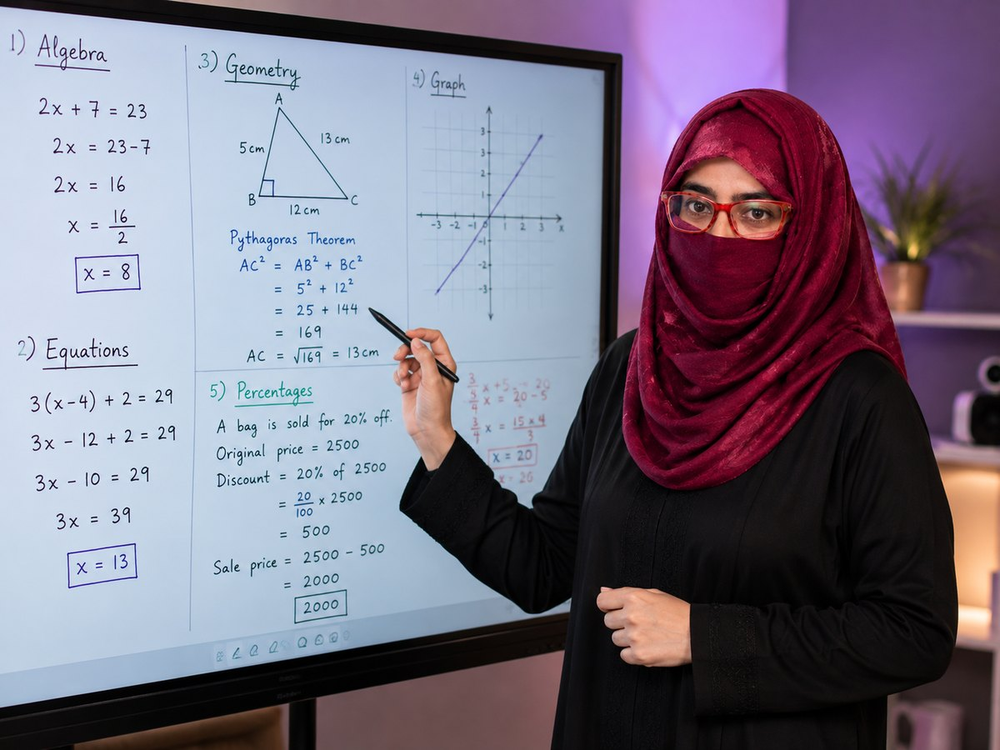

15+ Years Experience
Over fifteen years teaching mathematics across school, O Level, IGCSE, Matric and FSc classrooms.
Maths is a method, not a talent.
Personalised online Mathematics tuition for Grades 6–10, Cambridge O Level Mathematics 4024, Additional Mathematics 4037, IGCSE, Matric and FSc, with complete teacher attention, flexible scheduling and lessons tailored to each student’s learning gaps.
Mathematics Educator
Academic Leader · Curriculum Specialist
Why learn here
An experienced Mathematics educator who has developed textbooks, designed assessments, trained teachers and led academic planning across multiple school levels.
Over fifteen years teaching mathematics across school, O Level, IGCSE, Matric and FSc classrooms.
Curriculum development and resource development coordination, aligned to the Cambridge framework rather than delivered from someone else’s scheme of work.
Trains other mathematics teachers in subject pedagogy, planning and classroom practice.
Mathematics textbook developer, so lessons are built from the source material rather than around it.
Builds assessment frameworks, so every test in class mirrors how the real paper is actually marked.
Mathematics department planning, KPI and academic monitoring, and EDAP academic system implementation.
Every student can improve in Mathematics when concepts are explained with clarity, patience and the right learning strategy.Ghosia Qureshi M.Sc Mathematics · M.Ed · B.Ed
Sound familiar?
Many capable students lose confidence in Mathematics, not because they lack ability, but because they never receive clear, step-by-step guidance.
Students memorise methods without understanding the logic.
Correct ideas but missing method marks and proper presentation.
Lack of confidence creates anxiety before every test.
Basic concepts from earlier grades affect current performance.
Students know the topic but struggle under timed conditions.
Random practice without a structured learning plan.
Every one of these challenges can be improved through structured concept-based learning, consistent practice and proper exam strategy.
See How I TeachTrust and confidence
How the support works
Each student receives individual teaching, focused practice and clear progress tracking based on their own syllabus, current level and learning gaps.
Lesson priorities are adjusted according to the student’s current understanding and performance.
Students practise exam-style questions with clear guidance on method marks, presentation and timing.
Every session focuses on one student, allowing questions, repetition and pace adjustment throughout the lesson.
Parents receive appropriate feedback on attendance, covered topics, ongoing weaknesses and next priorities.
Parent confidence
Each session follows the student’s personal learning plan.
Submitted work is reviewed with corrections and improvement guidance.
Lesson timing is arranged by mutual agreement and subject to availability.
Recurring errors, completed topics and remaining gaps are monitored over time.
“When students receive individual attention, confidence grows naturally and results begin to follow.”Ghosia Qureshi Mathematics Educator
Who this is for
Every student is taught individually against their own board and their own paper set. No time is ever spent on a syllabus your child is not sitting.
The years where maths quietly breaks. We rebuild arithmetic fluency, fractions, ratio and early algebra so that O Level or Matric does not arrive as a shock.
One-to-one preparation for Mathematics D 4024 and Additional Mathematics 4037, with concept teaching, worked examples, past-paper practice, method-mark guidance and timed exam preparation.
Core and Extended both supported, including the non-calculator papers introduced from 2025, plus International Mathematics with its investigation and modelling papers.
Sindh Board and Federal Board taught separately, because the two are now on different curricula. Exercise-by-exercise coverage plus full-length board mocks.
Private one-to-one Mathematics tuition for FSc Part I and Part II, with concept development, exercise practice, board-paper preparation and timed exam practice.
A short intensive run before board or Cambridge exams. Pure past papers, timing drills and marking technique. No new theory, only mark recovery.
How the class runs
Most students are not bad at maths. They are carrying three or four unfixed gaps from two years ago and losing marks on presentation. Both are findable, and both are fixable.

Coverage
Pick your board and level. Every topic listed here is taught in class, drilled with worksheets, and tested under timed conditions before the exam.
Foundation track. Follows your child’s school scheme of work and closes the gaps underneath it.
Cambridge O Level private tuition is available for Mathematics D 4024 and Additional Mathematics 4037. Each subject is taught according to its own syllabus, paper requirements and mark-scheme expectations.
Cambridge IGCSE. From the 2025 series, 0580 is examined with one non-calculator paper and one calculator paper at both Core and Extended tier.
Sindh Textbook Board, Jamshoro. Covers the Karachi, Hyderabad, Sukkur, Larkana, Mirpurkhas and Shaheed Benazirabad boards. Nine years of board past papers included.
FBISE with the National Book Foundation books written for the National Curriculum of Pakistan 2022–23, in force from the 2025 session. This is a different chapter set from the older Federal course, so make sure your child is studying the current book.
Sindh Textbook Board intermediate course, as examined by the Board of Intermediate Education Karachi and the other Sindh intermediate boards.
FBISE intermediate mathematics. Chapter numbering follows the Federal Board scheme of studies for HSSC Part I and Part II.
Private tuition
Sessions are arranged individually around school, and confirmed with you before they begin.
Tuition fees depend on the student’s level, syllabus, session duration and weekly frequency.
Questions
It is a written diagnostic of about 45 minutes taken at home, followed by a short call to go through the result. You receive the gap report either way, and there is no obligation to continue afterwards.
The diagnostic exists exactly for this. If a student needs foundation work first, we say so honestly and start there, rather than taking the fee and hoping.
Yes, and separately. The two boards are now on different curricula at Matric level, so each student is taught strictly from the syllabus and past papers of their own board.
A phone or laptop, a working internet connection, and a notebook. A tablet with a stylus helps but is not required. Homework is photographed and sent on WhatsApp.
Because sessions are private, a missed session is rescheduled by mutual agreement rather than lost. Session recordings may be provided by prior agreement where appropriate.
Yes. Timings are quoted in Pakistan Standard Time and the session slot is agreed around your own time zone.
Yes. Topic notes, worksheets and a complete past-paper bank with mark schemes are included in the fee. No separate material charges.
Bank transfer, Easypaisa or JazzCash. You will receive written confirmation and a receipt after payment. Never send a fee to an account you have not confirmed with us on the WhatsApp number listed on this page.
Step one
Fill this in and you will get a reply on WhatsApp within one working day with an assessment link and a slot. No payment at this stage.
We will message you on WhatsApp within one working day with an assessment link and a slot. If you would rather not wait, message us directly.
Message on WhatsAppIn her own words
Mathematics is more than formulas and correct answers.
When students understand why each step works, confidence grows naturally.
My goal is to help every student build strong mathematical thinking, improve examination performance and become an independent learner through personalised one-to-one teaching.